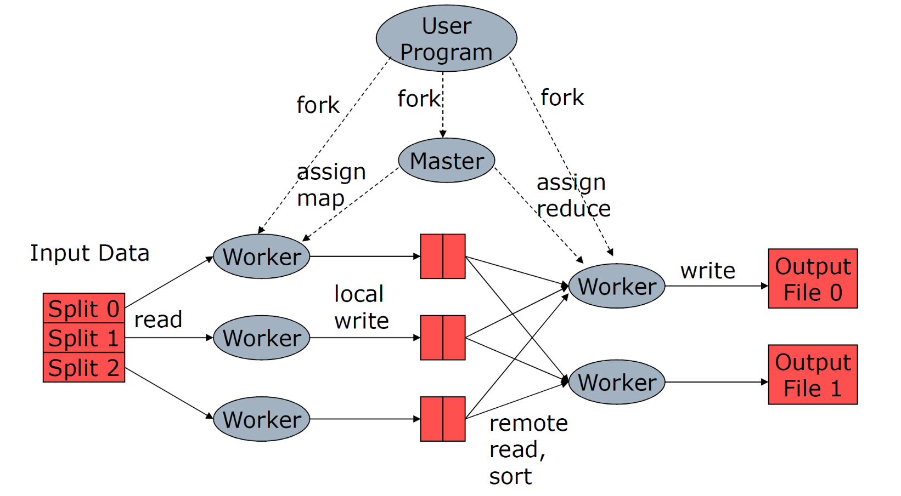
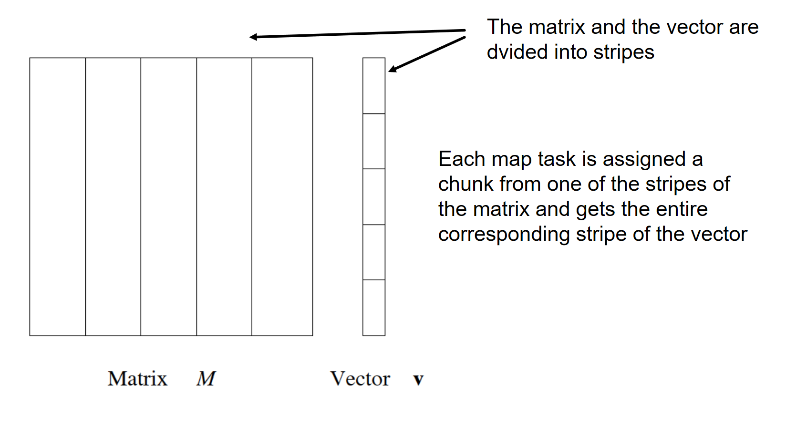

Hadoop
Hadoop è un framework opensource (progetto Apache, sviluppato da Yahoo). Lo scopo di Hadoop è quello di immagazzinare e processare dataset in scala massiva. Hadoop può girare su un cluster di comodity hardware. Le seguenti componenti formano il core del framework:
- HDFS, un file system distribuito
- MapReduce, modello di programmazione per large scale data processing.
Hadoop astrae la complessità dietro i sistemi distribuiti, permettendo a programmatori senza alcuna competenza nel campo di poter utilizzare facilmente le risorse di un data center per elaborare grandi moli di dati.
Large scale computing
Per processare grandi moli di dati vi sono due tecniche:
- Scale up: aumentare le prestazioni di un singolo nodo
- Scale out: aumentare il numero di nodi
Nella maggior parte dei casi conviene adottare la seconda tecnica: si utilizza un cluster formato da commodity hardware, ovvero hardware economico, facilmente reperibile, e si organizza il computing dei dati in modo parallelo. Con lo scale out è necessario organizzare il processing dei dati in maniera distribuita, quindi orchestrare i nodi, adottare tecniche di fault tolerance nel caso di guasti, trasportare i dati da un nodo ad un altro etc.
Hadoop risolve elegantemente questi problemi:
- Provvede un file system distribuito, astraendo le complicazioni sottostanti e permettendo al programmatore di accedere ai dati come in un normale file system.
- Introduce un modello di programmazione orientata al calcolo distribuito, ovvero Map-Reduce.
Concetti chiave
L'infrastruttura dello storage HDFS è formata da:
- Datanode, nodi che contengono e trasferiscono dati
- Namenode, localizza i file nei datanode (orchestratore)
I file sono divisi in blocchi e replicati sui datanode (replicazione spesso su diversi rack). Chunk da 16-64 mb vengono inviati ai workers per la computazione. L'utente può scegliere il grado di replicazione e la dimensione dei chunk.
L'infrastruttura della componente MapReduce è la seguente:
- Masternode, che orchestra la computazione
- Workers, effettuano la computazione
Ogni programma che gira su Hadoop rispetta la seguente pipeline (modello MapReduce):
- iterare su un grande numero di record in parallelo
- Ad ogni iterazione, estrarre delle informazioni
- Eseguire uno shuffling ed un sorting dei risultati intermedi
- Aggregare i risultati intermedi
- Generare il risultato finale
Vi sono due sole primitive:
- La map prende in input un oggetto con una chiave ed un valore e restituisce un elenco di coppie chiave valore . Il framework (Hadoop) colleziona tutte le coppie con la stessa chiave e associa a tutti i valori .
- La reduce prende in input una chiave ed una lista di valori e li combina in qualche modo.
Ai nodi workers possono essere affidati task di map e di reduce. Solitamente lo scheduler assegna i task di map ai nodi che hanno i dati vicini, per risparmiare sul tempo. I risultati intermedi delle operazioni di map sono conservati nel file system locale dei nodi workers che li hanno svolti.
Quando un nodo worker ha finito un task di map, produce file intermedi (uno per ogni reduce instanziata) e avverte il master. Il master comunica la posizione dei file ai reducer instanziati.
Se un worker è lento allora tutta la computazione sarà lenta. Per questo il masternode può assegnare lo stesso task a più worker. Chi finisce prima "vince" e segnala i risultati al masternode, mentre gli altri worker verranno interrotti.
Quando la funzione reduce è commutativa e associativa è possibile anticipare la computazione con dei combiners: si aggregano i dati intermedi direttamente nel nodo worker che li ha prodotti.
Se si vuole controllare come le chiavi vengono partizionate negli file intermedi, si può utilizzare un partitioner, definendo una hash function propria.
Al resto ci pensa il framework Hadoop: quando lo sviluppatore sottomette il job, hadoop penserà a:
- Gestire lo scheduling
- Gestire la distribuzione dei dati
- Gestire la sincronizzazione dei risultati
- Gestire fallimenti ed errori
- Gestire il file system distribuito
Molto spesso il numero di task istanziati eccede il numero massimo di task eseguibili in maniera concorrente, per questo lo scheduler tiene una coda dei task, eseguiti ogni qual volta un worker è disponibile.
Proprietà di Hadoop
- Data locality: dati e worker devono essere vicini
- Architettura senza condivisione: ogni nodo è indipendente e autosufficiente
- Localizzazione: porta il worker dai dati e non viceversa (così da non far spostare i dati nella rete)
- Sincronizzazione: tra le map e le reduce, tramite raggruppamento per chiavi (ottenuto tramite sorting dei risultati intermedi).
- Gestione fallimenti:
- map failure: si rischedula il task su un altro worker e si notificano i reducer.
- reducer failure: si rischedula il task su un altro worker.
- master failure: aborto del job e notifica al client.
Natural join example
Abbiamo due tabelle e . Vogliamo calcolare la natural join tra queste ultime.
def R_map(k, v):
b = v[1]
a = v[0]
emit(b, (a, "R"))
def S_map(k, v):
b = v[0]
c = v[1]
emit(b, (c, "S"))
def natural_join_reduce(k, w):
b = k
a_set = [ v[0] if v[1] == "R" for v in w ]
c_set = [ v[0] if v[1] == "S" for v in w ]
for a in a_set:
for c in c_set:
emit(a, b, c)
Yarn
YARN (Yet Another Resource Negoziator) è la componente di Hadoop che si occupa di generare e coordinare i map/reduce task (master). È composto da tre pezzi:
- Resource manager
- Node manager
- Application master

Assegnazione dei task
Hadoop permette di specificare il grado di parallelismo di ogni macchina in configurazione, esprimendo il numero di slot. Un slot è un contenitore in cui può finire un map/reduce task in esecuzione.
Matrix-Vector multiplicatione example
Sia una matrice di dimensione . Sia un vettore di dimensione . La moltiplicazione matrice-vettore produce un vettore di lunghezza dove: Supponiamo che e siano file su HDFS. Ogni entry della matrice può essere conservata esplicitamente come (stessa cosa per ).
Se riesce ad entrare in memoria centrale, possiamo scrivere la seguente procedura:
def map(k,v):
v = get_v_from_cache()
i = v[0]
j = v[1]
m_ij = v[2]
v_i = v[i]
emit(i, (v_i * m_ij))
# w conterrà i risultati di tutti
# i prodotti di indice "i"
def reduce(k, w):
i = k
x_i = 0
for v in w:
x_i += v
emit(i, x_i)
Se non entra in memoria, allora si dividono sia la matrice che il vettore in fasce:

Quando si assegnano ai worker i map-task si passano dati i dati di uno stripe della matrice e del corrispondente stripe del vettore.
Matrix multiplication example
Siano e due matrici entrambi di dimensione .
# il valore è (i, j, m_ij). Invia come chiave
# la colonna j e come valore "M" (identificativo),
# i (la riga) ed m (il valore).
def M_matrix_map(k, v):
i = v[0]
j = v[1]
m = v[2]
emit(j, ("M", i, m))
# il valore è (j, k, n_jk). Invia come chiave
# la riga j e come valore "N" (identificativo),
# i (la riga) ed n (il valore).
def N_matrix_map(k, v):
j = v[0]
k = v[1]
n = v[2]
emit(j, ("N", k, n))
# si dividono gli elementi raggruppati sono la chiave
# "i" e si dividono in base alla matrice di provenienza.
# Si itera tra gli elementi di M e poi tra gli elementi di
# N e si performa il prodotto la riga di M e la colonna di
# N. Si emette come chiave (i, k) (riga di M e colonna di N)
def prod_reduce(k, w):
j = k
j_cols_M = [ m if v[0] == "M" for v in w ]
j_rows_N = [ n if v[0] == "N" for v in w ]
for (_, i, m_ij) in j_cols_M:
for (_, k, n_jk) in j_rows_N:
emit((i,k), (m_ij * n_jk))
# funzione identità
def identity_map(k, v):
emit(k, v)
# Si raggruppano i prodotti che formano l'elemento
# (i,k) nella matrice risultante e si sommano.
# si emette (i,k) come chiave ed il valore dell'elemento
# come valore.
def sum_reduce(k, w):
return (k, sum(w))